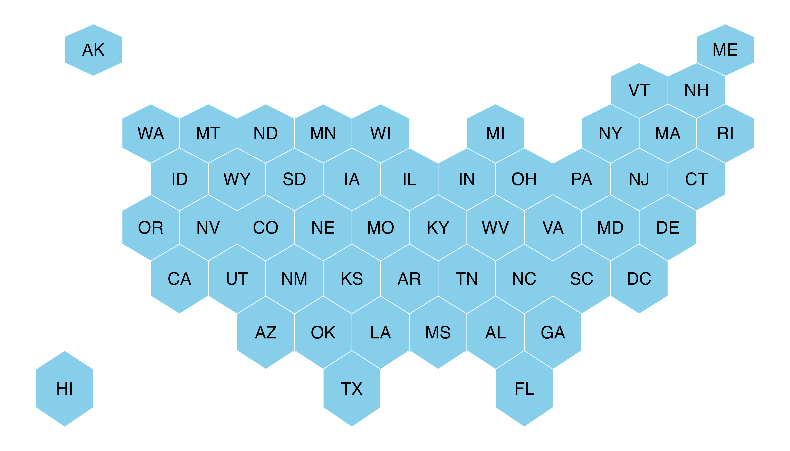

Basic hexbin map
The first step is to build a basic hexbin map of the US. Note that the gallery dedicates a whole section to this kind of map.
Hexagon boundaries are provided here.
You have to download it at the geojson format and load it
in R thanks to the st_read() / read_sf() function. You get
a geospatial object that you can plot using the plot()
function. This is widely explained in the background
map section of the gallery.
# library
library(tidyverse)
library(sf)
library(RColorBrewer)
# Download the Hexagon boundaries at geojson format here: https://team.carto.com/u/andrew/tables/andrew.us_states_hexgrid/public/map.
# Load this file. (Note: I stored in a folder called DATA)
my_sf <- read_sf("DATA/us_states_hexgrid.geojson.json")
# Bit of reformatting
my_sf <- my_sf %>%
mutate(google_name = gsub(" \\(United States\\)", "", google_name))
# Show it
plot(st_geometry(my_sf))ggplot2 and state name
It is totally doable to plot this geospatial object using
ggplot2 and its geom_sf() and
geom_sf_text() functions.

ggplot(my_sf) +
geom_sf(fill = "skyblue", color = "white") +
geom_sf_text(aes(label = iso3166_2)) +
theme_void()Basic choropleth
Now you probably want to adjust the color of each hexagon, according to the value of a specific variable (we call it a choropleth map).
In this post I suggest to represent the number of wedding per thousand people. The data have been found here, and stored on a clean format here.
Let’s start by loading this information and represent its distribution:
# Load marriage data
data <- read.table("https://raw.githubusercontent.com/holtzy/R-graph-gallery/master/DATA/State_mariage_rate.csv",
header = T, sep = ",", na.strings = "---"
)
# Distribution of the marriage rate?
data %>%
ggplot(aes(x = y_2015)) +
geom_histogram(bins = 20, fill = "#69b3a2", color = "white") +
scale_x_continuous(breaks = seq(1, 30))Most of the state have between 5 and 10 weddings per 1000 inhabitants, but there are 2 outliers with high values (16 and 32).
Let’s represent this information on a map. We have a column with the state id in both the geospatial and the numerical datasets. So we can merge both information and plot it.
Note the use of the trans = "log" option in the color
scale to decrease the effect of the 2 outliers.
# Merge geospatial and numerical information
my_sf_wed <- my_sf %>%
left_join(data, by = c("google_name" = "state"))
# Make a first choropleth map
ggplot(my_sf_wed) +
geom_sf(aes(fill = y_2015)) +
scale_fill_gradient(trans = "log") +
theme_void()Customized hexbin choropleth map
Here is a final version after applying a few customization:
- Use handmade binning for the colorscale with
scale_fill_manual - Use
viridisfor the color palette - Add custom legend and title
- Change background color

# Prepare binning
my_sf_wed$bin <- cut(my_sf_wed$y_2015,
breaks = c(seq(5, 10), Inf),
labels = c("5-6", "6-7", "7-8", "8-9", "9-10", "10+"),
include.lowest = TRUE
)
# Prepare a color scale coming from the viridis color palette
library(viridis)
my_palette <- rev(magma(8))[c(-1, -8)]
# plot
ggplot(my_sf_wed) +
geom_sf(aes(fill = bin), linewidth = 0, alpha = 0.9) +
geom_sf_text(aes(label = iso3166_2), color = "white", size = 3, alpha = 0.6) +
theme_void() +
scale_fill_manual(
values = my_palette,
name = "Wedding per 1000 people in 2015",
guide = guide_legend(
keyheight = unit(3, units = "mm"),
keywidth = unit(12, units = "mm"),
label.position = "bottom", title.position = "top", nrow = 1
)
) +
ggtitle("A map of marriage rates, state by state") +
theme(
legend.position = c(0.5, 0.9),
text = element_text(color = "#22211d"),
plot.background = element_rect(fill = "#f5f5f2", color = NA),
panel.background = element_rect(fill = "#f5f5f2", color = NA),
legend.background = element_rect(fill = "#f5f5f2", color = NA),
plot.title = element_text(
size = 22, hjust = 0.5, color = "#4e4d47",
margin = margin(b = -0.1, t = 0.4, l = 2, unit = "cm")
)
)